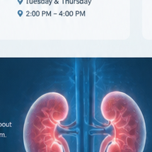

🫘
Chronic Kidney Disease
Evaluation, risk-factor review and long-term monitoring of kidney function.
Consultant-led kidney care with a focus on clear guidance, early assessment, evidence-based treatment and long-term kidney health.
Consultant Nephrologist focused on kidney health and patient well-being.
Dr. Kinza Bilal provides nephrology consultations for patients with kidney-related concerns. The approach is centered on careful assessment, understandable explanations, individualized care and appropriate follow-up.
Assessment and management can vary from patient to patient. A consultation helps determine the appropriate next step.
Evaluation, risk-factor review and long-term monitoring of kidney function.
Assessment of blood-pressure-related kidney risk and ongoing management.
Kidney-focused review for people with diabetes and abnormal kidney tests.
Clinical evaluation for recurrent stones, urinary concerns and related kidney issues.
Assessment of sodium, potassium and other electrolyte abnormalities.
Guidance and nephrology follow-up for patients who may need renal replacement therapy.
Please confirm the latest timing before travelling, especially on public holidays or schedule-change days.
8:00 AM – 2:00 PM
Daytime hospital consultation.
Tuesday & Thursday
2:00 PM – 4:00 PM
Evening Clinic
Available on the remaining working days.
Your kidneys remove waste and excess fluid from the blood, help regulate blood pressure, maintain electrolyte balance and support red blood cell and bone health.
Explore Kidney Health Tips
Advice should always be individualized when you already have kidney, heart or other medical conditions.
Fluid needs vary. Follow individualized advice if you have kidney or heart disease.
Limit excess salt and focus on a balanced diet suited to your health needs.
Regular activity and weight management can support blood pressure and metabolic health.
Good blood-pressure and glucose control can reduce kidney-related risk.
Stopping smoking supports cardiovascular health and may reduce kidney-related risk.
Frequent use of some pain medicines can affect kidneys; discuss regular use with a clinician.
Common questions patients may have before seeing a nephrologist.
A referral or review may be appropriate for abnormal kidney tests, protein or blood in urine, difficult-to-control blood pressure, recurrent kidney stones, swelling, or known kidney disease.
Bring recent laboratory reports, imaging, a current medication list, previous medical records if relevant, and details of your blood-pressure or glucose readings.
No. Early kidney disease can be silent, which is why blood and urine tests can be important for people with risk factors.
No. Many kidney conditions are managed without dialysis. The need for dialysis depends on kidney function, symptoms, complications and the overall clinical situation.
Use the form to prepare an appointment request. Contact details can be connected to WhatsApp, phone or a booking system before launch.
DHQ Hospital: 8:00 AM – 2:00 PM
Sarmad Hospital: Tuesday & Thursday, 2:00 PM – 4:00 PM
Allama Iqbal Hospital, Kharian: Evenings on remaining working days